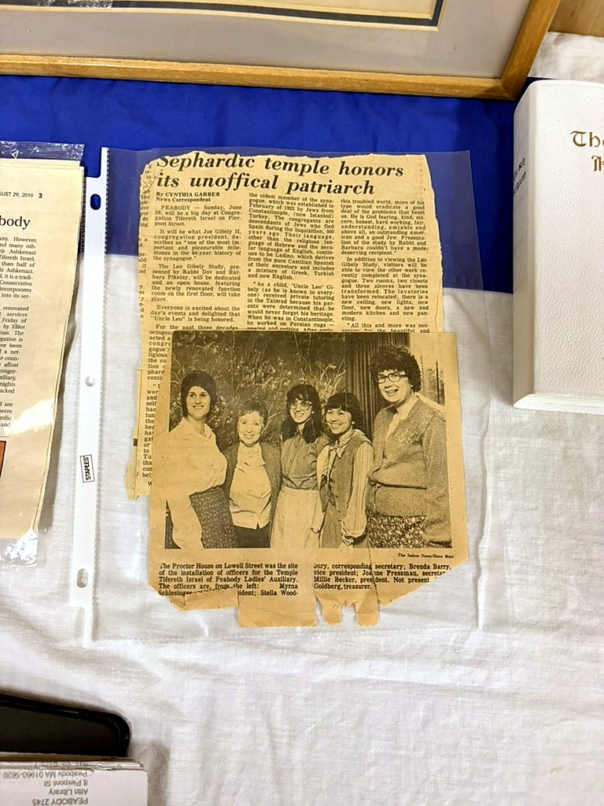
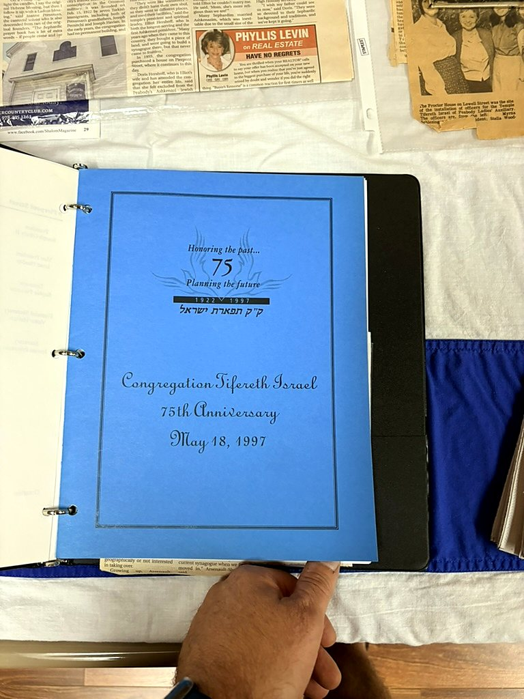
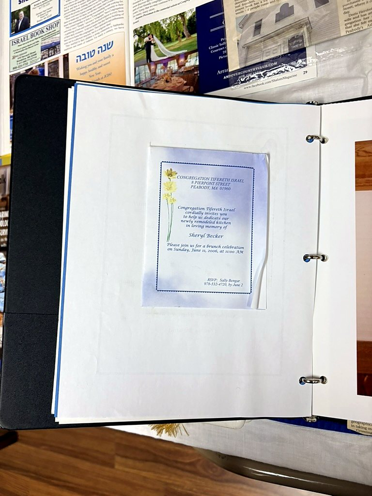
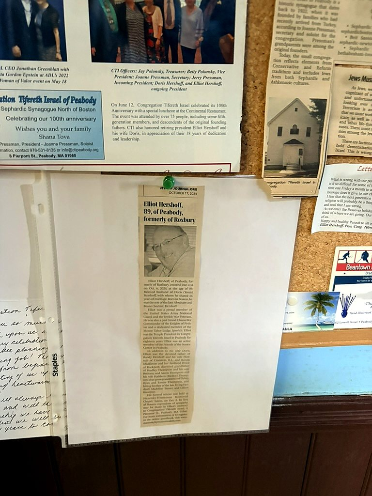

Gallery
Images from Congregation Tifereth Israel, its people, and the wider story of Jewish life in Peabody.

8 Pierpont Street
Congregation Tifereth Israel's longtime home in Peabody. Historical image from the Jewish Historical Society of the North Shore.

Rabbi Phillip Blue and Family
Rabbi Phillip Blue with his wife, Miriam, and their two children.

At the CTI Ark
Elliot Hershoff, Doris Hershoff, and Joanne Pressman standing at or near the ark at Congregation Tifereth Israel. Published in 2019.

Jewish Life in Peabody, 1958
Lighting of the menorah at the Peabody Hebrew School, 42 Washington Street. This is regional Jewish-history context and is not identified as a CTI photograph.

The congregation in 1922
Archival image labeled “Congregation Tifereth Israel 1922,” from the Jewish Community of Peabody records.

CTI in the local press
Newspaper clipping preserved in the Jewish Community of Peabody archival collection.

In Search of a Home
Historical newspaper feature documenting the congregation and its physical home.

Founders and Charter Members
The synagogue plaque records the congregation’s founding date, February 15, 1922, and preserves the names of its founders and charter members.

Presidents of CTI
The presidents plaque preserves a visible record of congregational leadership across generations.

Golden Anniversary
Newspaper coverage and a dinner ticket preserved from CTI’s 50th-anniversary celebration.

50th Anniversary in the Press
Contemporary newspaper clippings marking fifty years of Congregation Tifereth Israel.

Anniversary Celebration Album
Additional photographs from the same congregational celebration album.

“Sephardic temple honors its unofficial patriarch”
A preserved newspaper feature about longtime CTI member Joe Gibely II and the congregation’s Sephardic community.

Origins of Peabody’s Sephardic Congregation
The November 6, 1992 Journal article documenting CTI’s Sephardic origins and history.

75th Anniversary Dinner
Invitation to CTI’s 75th Anniversary Dinner, held May 18, 1997 and sponsored by the Ladies Auxiliary.

“Honoring the Past — Planning the Future”
Cover of the congregation’s 75th-anniversary program.

Kitchen Dedication
Invitation to a brunch celebrating the dedication of CTI’s remodeled kitchen in memory of Sheryl Becker.

Community Photograph
A congregational photograph preserved with the 2006 kitchen-dedication materials.

Shuls Mark Historic Milestones
Jewish Journal coverage from CTI’s 90th-anniversary year.

90th Anniversary Program
Program from CTI’s October 21, 2012 anniversary celebration.

100 Years of Worship
Centennial newspaper coverage marking a century since the congregation’s founding in 1922.

Elliot Hershoff
A Jewish Journal obituary clipping for longtime CTI leader Elliot Hershoff, preserved at the synagogue.